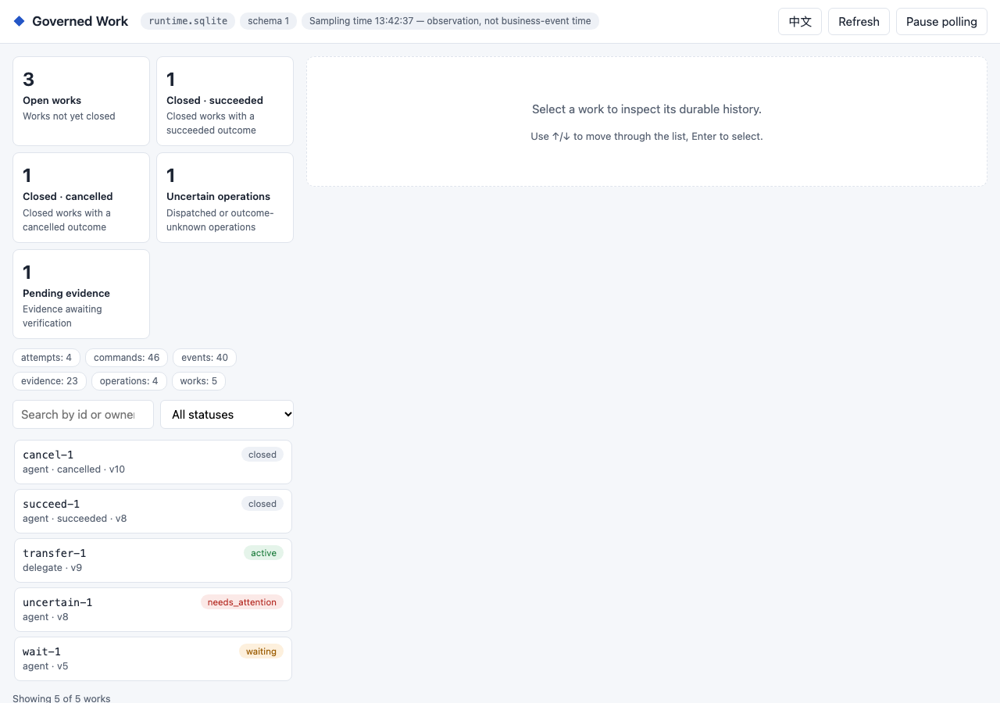
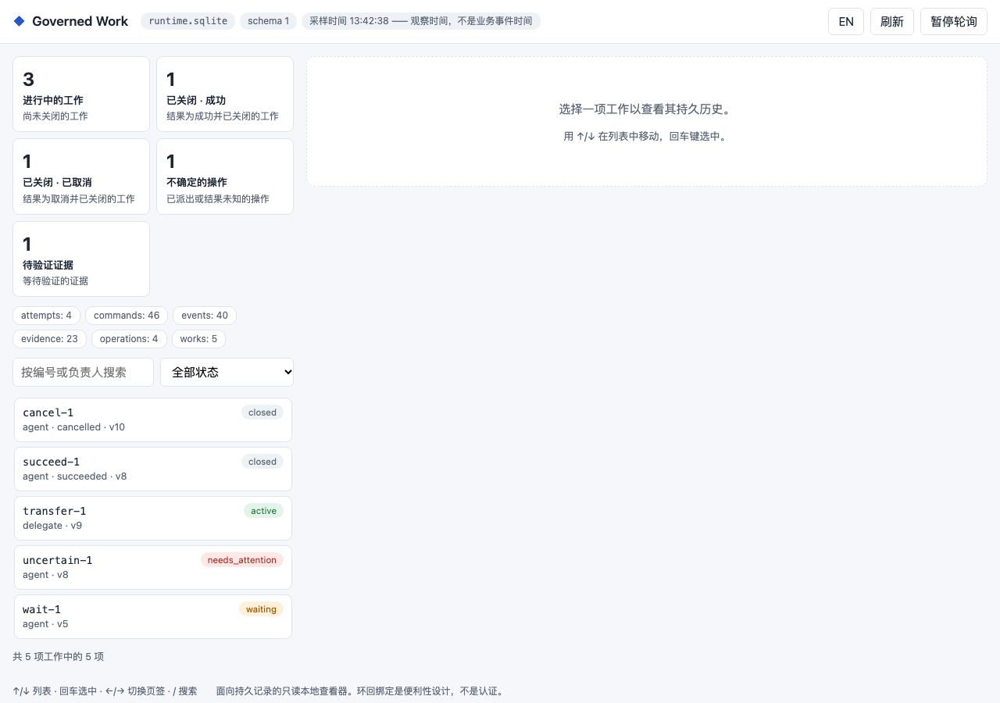
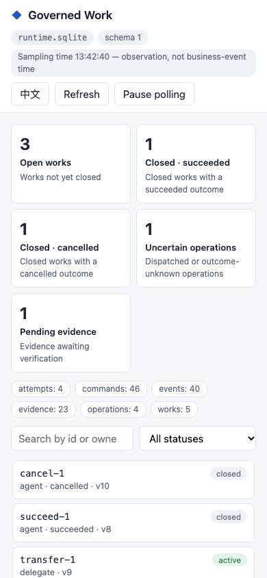
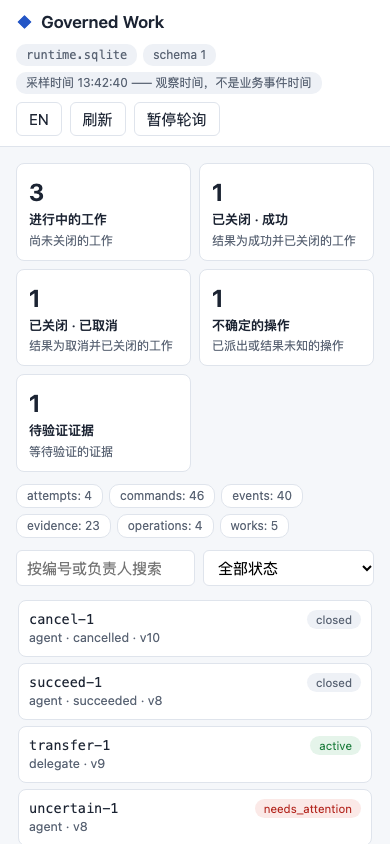

Let agents plan. Make every business action accountable.
A small, durable runtime for work that must survive agent sessions and prove its results. Agents propose actions; policies gate execution; evidence establishes completion.
Pre-alpha Status: local reference prototype · Python 3.9+ · Apache-2.0 · zero runtime dependencies
Why a work runtime
Business work outlives the chat session
A business task can outlive its conversation. Its plan can change, approval can arrive days later, and a timed-out API request may already have created a real application. This project keeps the responsibility, constraints and evidence in a persistent Work.
Work outlives the session
Plans get revised, approvals arrive days later, and a timed-out call may already have created a real effect. The runtime keeps the obligation attached to the work, not to the plan step.
Decisions are durable
Commands, receipts, evidence, waits and logical operations are persisted. After a restart the same business key recovers its receipt — without resubmitting or losing the external effect.
Policies admit, evidence completes
Policies decide whether a proposed action is admitted; verified evidence decides whether work is complete. The agent picks the strategy — the runtime holds the accepted rules around its actions.
- Work vs. plan — removing a step cannot remove the requirement for approval.
- Command vs. operation vs. attempt — lost responses and retries retain the original business identity.
- Execution vs. proof — a completed tool call cannot establish a business result without matching evidence.
Architecture
One accountable path from proposal to proof
-
Proposer
The agent proposes the next action. It never flips a work to “approved” or “done” itself.
-
Version-bound command
Commands are deduplicated and checked against the bound contract revision; receipts are immutable and append-only.
-
Policy gate
Rules admit or block each proposal — for example E05, a missing special approval. Rejected decisions are recorded, never silently dropped.
-
Durable operation
Every external effect belongs to one logical operation. Waits, expiry and uncertain outcomes are explicit durable state.
-
Adapter / effect
External systems run behind a declared Adapter interface. Uncertainty is resolved by querying the original operation — never by a blind resubmit.
-
Receipt / evidence
Completion requires verified evidence: the runtime matches receipts and evidence before it records SUCCEEDED.
Blockers (such as a missing approval), rejected commands and interventions are recorded as durable decisions. When a response is lost after an external commit, recovery re-queries the original operation by its business key — the effect is recovered exactly once, or escalated to a human, never replayed blind. Semantics: RFC-001 core semantics · RFC-003 runtime protocol.
Demo
Watch it recover from a real crash
Sample Illustrated sample — the six stages below are the recorded output of python3 -m work_runtime demo, not a running Python engine or a live agent.
-
Proposal blocked
1. Agent proposes submission → BLOCKED by E05 (approval missing)
-
Durable wait
2. Work waits durably; no model session needs to stay alive
-
Approval arrives
3. Finance approves current content → submission intent accepted
-
Crash after acceptance
4. OA accepts → worker exits before saving the response (real process crash)
-
Same-key recovery
5. Restart → query original operation → existing OA receipt recovered
-
Evidence-backed completion
6. Evidence-backed completion → SUCCEEDED; external applications created: 1
The demo creates fresh temporary databases, starts a separate worker, and deliberately terminates it after the external service has committed. The final line is asserted against the external database: exactly one application exists.
Browse the durable history: a local read-only GUI
python3 -m work_runtime ui-demoScreenshots of the actual current interface, seeded by ui-demo with its five-work sample (waiting, needs-attention, transferred, succeeded, cancelled). This public site never connects to your local UI or database.




Quick start
Three commands to a real crash recovery
git clone https://github.com/WayJ/governed-agentic-work-runtime.git
cd governed-agentic-work-runtime
python3 -m work_runtime demoRequires Python 3.9 or newer. No model API key, no credentials, no third-party runtime dependencies. Every demo run creates a new temporary directory and never overwrites previous runs.
More demos in the same checkout
python3 -m work_runtime publish-demo— signed evidence gates a publication: HMAC envelopes, tamper rejection, same-key recovery after a timeout.python3 -m work_runtime intervention-demo— ownership transfer, cancellation with an uncertain external effect, explicit policy migration.python3 -m work_runtime adoption-demo— static SOP rule-card linting plus a real file publication through the third adapter.python3 -m work_runtime ui-demo— seeds the five-work sample store and serves the local read-only GUI.
Contribute
Extend it, or challenge it
Write an adapter
Connect a third external system through the public contract.
Author a rule card
Describe your business policy as a SOP rule card — statically linted, never executed.
Challenge a guarantee
Reproducible failures against a stated guarantee are the most useful contributions.